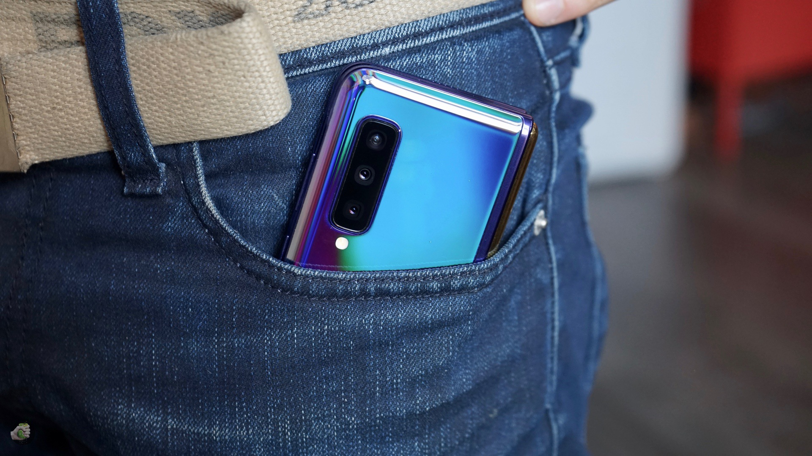
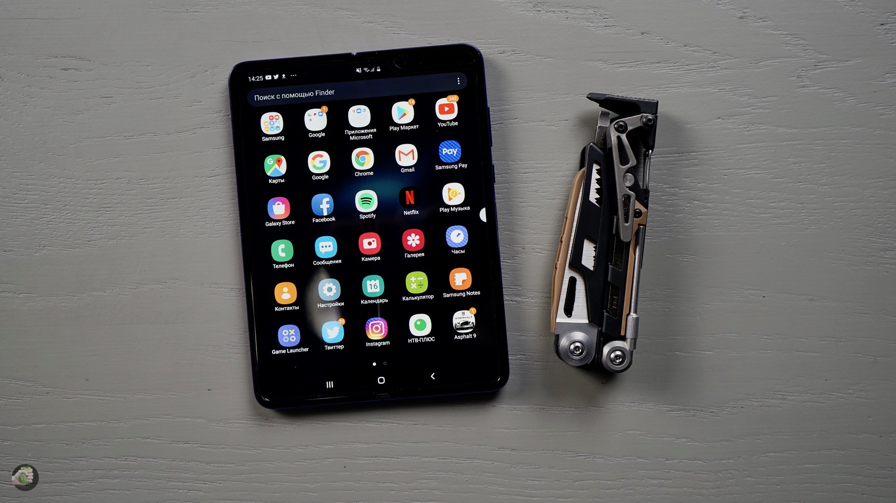
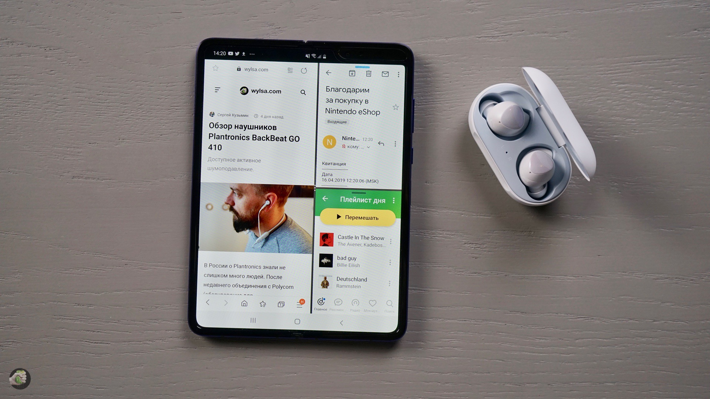

Samsung Galaxy Fold??

Любое новое устройство — я имею в виду совсем новое для рынка — сразу же начинаешь примерять к своей жизни. Скажем, когда вышел первый iPad, я перестал покупать печатные издания, потому что оказалось проще оформить подписку в приложении: что тогда, что сейчас использую Zinio. И это только один из примеров. iPad помогает смотреть кино в дороге, с удобством отвечать на письма, если пристёгнута клавиатура, тут легче искать нужный альбом в iTunes или сортировать фотографии. В момент анонса Samsung Galaxy Fold я подумал, что этот гаджет будет делать в моей жизни? Я думал, думал, а теперь удалось попробовать. Давайте разберёмся, что можно делать с Fold.
Самый главный
show off гаджет весны и лета!
Или, говоря проще, с Samsung Galaxy Fold прекрасно понтоваться. Когда-то давно словом gadget обозначали всякую электронную экзотику, типа камеры Casio Exilim со встроенным плеером или первую Sony AIBO. Сейчас гаджетов вроде бы много, но рынок давно уже каталогизирован и подробно прописан в продуктовых линейках. Fold в этом мире пока как пришелец: в существующие линейки не вписывается, а в большом городе, если откроешь его в ресторане или на улице, получишь свою долю внимания.

Смотреть или выкладывать контент в Instagram?
Да-да-да, для сторис лучше подойдет айфон, тут все понятно, но на большом экране гораздо удобней обрабатывать свои фото. Девушки смогут эффективнее удалять изъяны и увеличивать глаза (или другие части тела), мужчины смогут увидеть самые незаметные отличия встроенных фильтров и других инструментов программы. Хотя в официальных материалах про ИГ никто ничего не говорил. Мы тут пришли к выводу, что из Fold получается отличная машина для создания и потребления такого контента. Как вы уже могли видеть у Вали в Инстаграме, тут и фронталка как положено, хорошая!
Конечно, использовать две программы одновременно!
Или даже три!
Слева Twitter, справа YouTube или наоборот, или Фейсбук какой-нибудь читаешь как не в себя — хотя что там читать, я решительно не представляю. Да, давайте будем откровенны: приложение Facebook в 2019 году заслуживает только одного, чтобы его поскорей удалили. Поэтому слева Twitter, справа Telegram. Два приложения одновременно на одном большом экране, это как положено. А тут у нас аж три приложения, браузер, почта да ещё и «Яндекс.Музыка»! А вот так красиво выглядит «Спотифай», скоро официально!

"Так мне его нужно покупать или как?"
За пару дней я понял одно: нужно ждать, когда это «сюрпризное» устройство оформится в линейку, когда появятся предложения других компаний, когда фронтальный, главный экран увеличится в размерах. Для складных смартфонов нужно время. Ну а пока, если есть деньги и интерес к новинкам, — покупайте смело прямо сейчас.
Больше подробностей